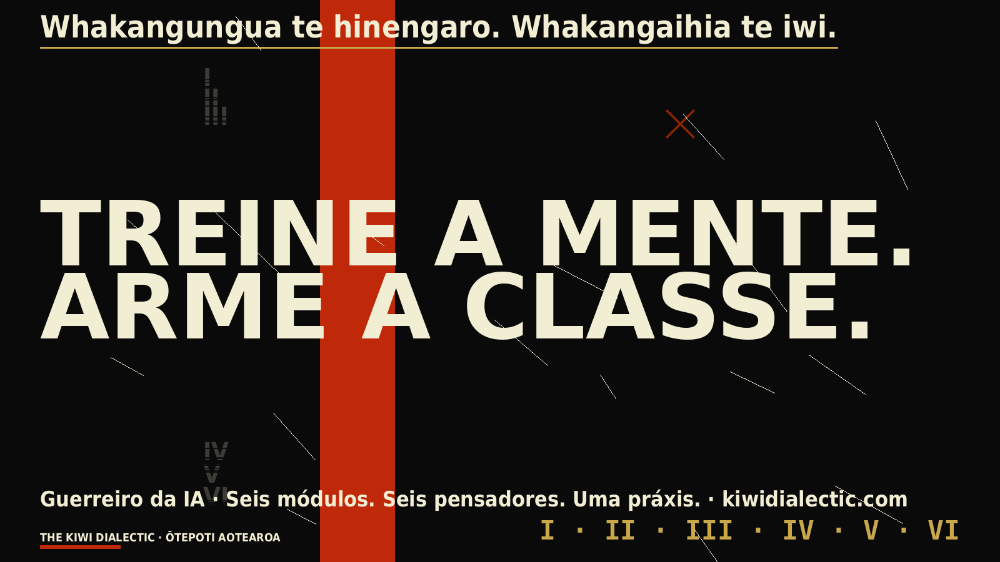
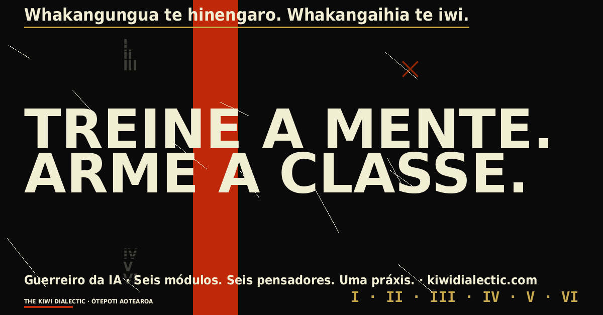
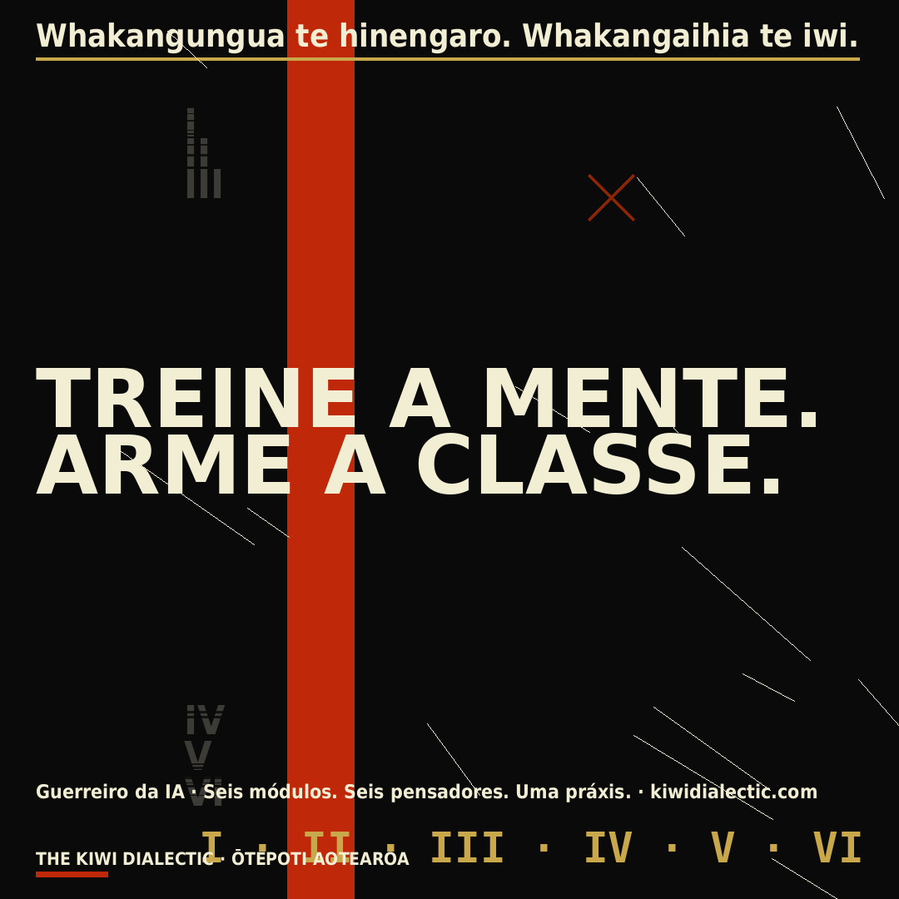
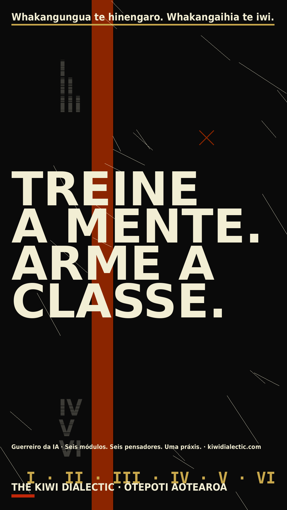

01
Contra a Educação Bancária
A IA generativa corre o risco de virar a maior sala de aula bancária já construída — consumo passivo de respostas pré-embaladas. Recusamos isso. Usamos diálogo, problematização e práxis.
Seis módulos. Seis pensadores. Um propósito — formar trabalhadores, organizadores e escritores para navegar a máquina sem serem colonizados por ela. Pedagogia do oprimido, reaparelhada para o algoritmo.

Freire nos alertou sobre a educação bancária — estudantes como vasilhas vazias. Gramsci nos alertou sobre a hegemonia — o senso comum que serve à classe dominante. A IA agora escala as duas coisas de uma vez. O curso é a contraposição.
A IA generativa corre o risco de virar a maior sala de aula bancária já construída — consumo passivo de respostas pré-embaladas. Recusamos isso. Usamos diálogo, problematização e práxis.
Modelos treinados na internet existente herdam sua hegemonia. Nossa tarefa é nomear o enquadramento, ler o que a máquina não consegue ler e escrever de volta no registro.
A ferramenta mais perigosa é uma mente treinada. O letramento em IA é hoje tão fundamental quanto o letramento na imprensa. Recusamos deixar a classe trabalhadora chegar atrasada ao próprio século.
Toda aula é gratuita para ler no Substack. O curso completo — cadernos de exercícios, prompts, perguntas e respostas semanais — custa US$ 7/mês em kiwidialectic.com.
O catálogo completo dos cursos vive no Substack — Gramsci, Kropotkin, Graeber, Freire, Deleuze, Bakunin e cada nova aula assim que chega. Gratuito para ler; assine para ter os cadernos, prompts e o Q&A semanal.
Cada módulo está ancorado em um pensador cuja obra explica uma aposta do momento da IA. Toque num cartão para ler a aula correspondente no Kiwi Dialectic.
Não é engenheiro de prompts. Não é vendedor de hype. É um trabalhador capaz de ler a máquina, escrever de volta nela e recusar o que deve ser recusado.
Leia a ideologia embutida em cada modelo, conjunto de dados e configuração-padrão. Torne o invisível legível.
Toda ferramenta que você construir deve servir à comunidade, ao apoio mútuo ou ao poder de classe — ou não ser construída.
Recuse a economia da atenção embutida na caixa de chat. Escolha o sentido em vez das métricas de engajamento.
Publique. Ensine. Torne o trabalho público. Uma mente treinada que não compartilha é uma loja fechada.
A janela de chat é a menor parte da máquina. Leia o data center, a cadeia de trabalho, a extração, a política pública.
Um arsenal da classe trabalhadora. Barato, aberto quando possível, sempre afiado. Cada ferramenta é um capítulo do curso mais amplo.
Busca com citação. Use como andaime de pesquisa, não como veredito.
Modelos locais e hospedados. Construa pequeno. Entregue primeiro para o seu povo.
A imprensa que é sua. Onde a escrita realmente vive.
Poesia, pôsteres, zines — ensino que contorna o algoritmo.
A disciplina de ver o que conecta antes do que brilha.
Escritor, organizador e editor do The Kiwi Dialectic, baseado em Dunedin, Aotearoa.
Robert escreve de Ōtepoti / Dunedin sobre pedagogia socialista, letramento em IA e a economia política da mídia. O Kiwi Dialectic é uma leitura semanal da classe trabalhadora cobrindo política de Aotearoa, ideologia e a longa tradição da recusa — de Gramsci a Graeber, de Freire a Bakunin — reaparelhada para o século algorítmico.
Oito pôsteres construtivistas em tamanhos para Twitter/X, LinkedIn e Instagram — gratuitos para baixar depois de você passar pelos módulos. Use-os para se declarar. Leve o trabalho para dentro do algoritmo.


Voz da classe trabalhadora. Palavras simples. Linhas curtas. Toque para copiar, cole na sua plataforma, anexe o pôster correspondente.
Terminei o GUERREIRO DA IA — seis módulos sobre letramento em IA pela ótica socialista e da classe trabalhadora. A ferramenta mais perigosa é uma mente treinada. Leia o curso de graça em kiwidialectic.com.
Gramsci. Kropotkin. Graeber. Freire. Deleuze. Bakunin. Seis pensadores, reaparelhados para o século algorítmico. O curso Guerreiro da IA está no ar em kiwidialectic.com.
Acabei de concluir o Guerreiro da IA — um curso gratuito de letramento em IA, clareza ideológica e pensamento sistêmico. Seis módulos, seis pensadores, uma práxis: treine a mente, arme a classe. Recomendo fortemente para organizadores, educadores e qualquer pessoa que use IA no trabalho. Curso → kiwidialectic.com
Seis módulos. Seis pensadores. Uma práxis. Terminei o GUERREIRO DA IA, do Kiwi Dialectic — um curso da classe trabalhadora sobre letramento em IA. Lendo: Gramsci, Kropotkin, Graeber, Freire, Deleuze, Bakunin.
Treine a mente. Arme a classe. De graça em kiwidialectic.com.
#GuerreiroDaIA #KiwiDialectic #LetramentoEmIA #PedagogiaSocialista #Aotearoa
TREINE A MENTE. ARME A CLASSE. Novo curso sobre letramento em IA e ideologia — de graça em kiwidialectic.com. Arraste para cima.
Pedagogia do oprimido, reaparelhada para o algoritmo. O curso Guerreiro da IA está no ar — seis aulas gratuitas sobre ler a máquina sem ser colonizado por ela. kiwidialectic.com
Dois kits no espírito de Ralph Hotere — campo preto fosco, vermelho de protesto, dourado ocre. Construídos para o algoritmo, construídos para a linha de piquete. Use em inglês, te reo Māori, tagalo ou português. Mais línguas a caminho conforme a coorte cresce.


Revisão por falantes nativos é bem-vinda. Abra uma issue ou envie um e-mail se puder ajudar.


Revisão por falantes nativos é bem-vinda.




Pôsteres em português a caminho. Revisão por falantes nativos é bem-vinda — abra uma issue ou envie um e-mail.
Um modelo de release de imprensa, um certificado de conclusão e cartões de divulgação em todas as línguas. Para quem termina o Guerreiro da IA e quer contar ao trabalho, ao sindicato, ao feed.


Abra o certificado ou os cartões de divulgação no Preview, Pixelmator, Photoshop, GIMP, Figma ou Canva. Substitua {NAME} e {DATE} pelos seus próprios. Imprima o certificado em A4 paisagem, 300 dpi. O modelo de release está no ZIP — preencha com seus dados e envie a um jornal comunitário, boletim sindical ou publicação no Substack.
Em homenagem a Ralph Hotere (1931–2013) — Te Aupōuri, Te Rarawa — de Port Chalmers / Aramoana / Ōtepoti. A estética toma emprestado dos seus quadros de campo preto, do ferro corrugado dos seus protestos de Aramoana e da tipografia urgente das suas obras-texto. A causa é nossa.
{kind=link}
{kind=link}
{kind=link}
{kind=link}